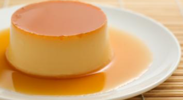

Receipten Flan Caramel

Ingredienten Flan Caramel
- ½ l melk
- 4 eieren
- 1 vanillestok
- 150 gr suiker
- 4 el water
Bereiding
- Verwarm de oven op 180 g. Neem 100 gr suiker en 4 eetlepels water.
Zet dit op het vuur en maak er karamel van.
Beboter de potjes en verdeel de karamel erover.
- Kook de melk met de vanillestok. Klop de eieren met de 50 g suiker.
- Giet er de kokende melk op. Doe dit melkmengsel terug in de kookpot en zet op het vuur.
- Hou het onder het kookpunt. Goed roeren gedurende enkele minuten tot de massa dikker wordt.
Verdeel de massa over de potjes.
- Doe water op je bakplaat en bak de flans gedurende 30 minuten op 175 graden au bain-marie.